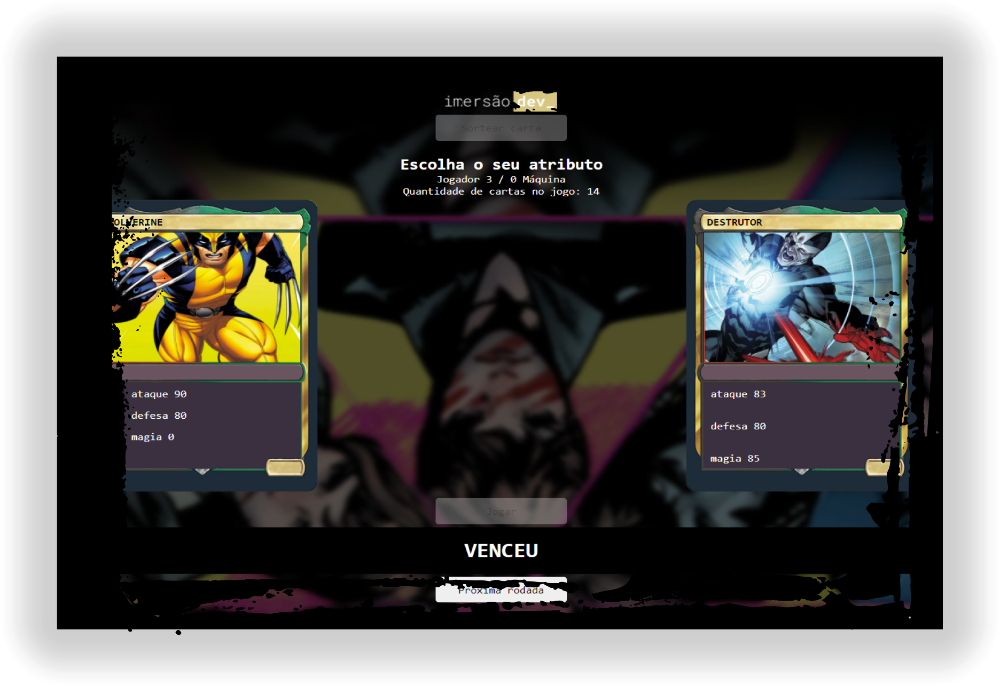

Não são apenas projetos,
são os meus Favoritos
Olá me chamo Rafaela sou designer e estou cursando programação, fiz este site
para ser meu portifólio. Pretendo colocar o máximo de projetos realizados aqui
com objetivo de ver meu progresso e ter referências do meu trabalho.
Separei os três projetos que mais gostei do resultado, espero que gostem.
